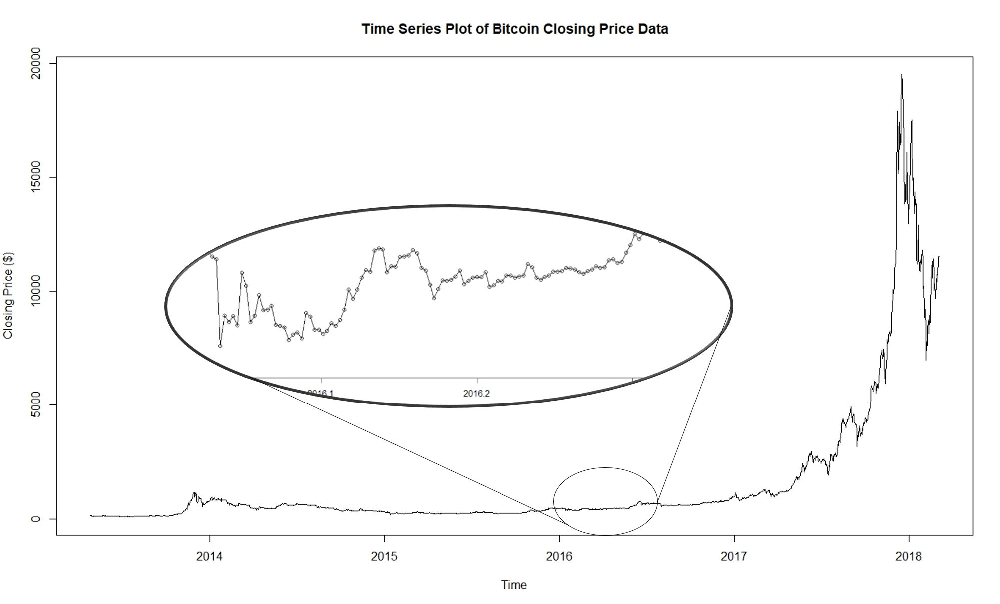
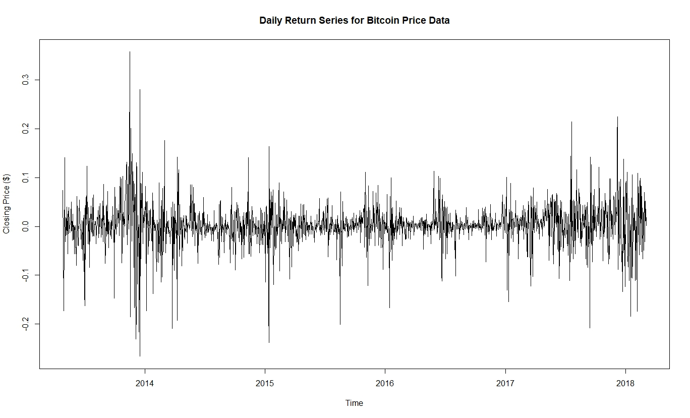

For those who may not know, Bitcoin is a peer-to-peer cryptocurrency that was created by an unknown person or group of persons known only as Satoshi Nakamoto that relies on encryption techniques to regulate the generation of coins. We were given a dataset sourced from Coinmarketcap which contained the daily closing prices of Bitcoin (in USD), from the 27/04/2013 to 03/03/2018 and were tasked with using R as a means for model fitting and forecasting through time series analysis.
Financial data tends to contain high amounts of variation between the current values in time to their past values. Given this, the conditional variance structure of Bitcoin's time series data can be modelled by utilising approaches that do not include ARIMA models considering their assumption of a constant variance is not helpful in this scenario.
Considering the main use of an ARCH (Autoregressive Conditional Heteroskedastisity) model is to predict future conditional variances, it is likely that it is useful here. In fact, a GARCH (Generalised ARCH) model may be better considering it allows us to obtain more efficient estimates by placing less weight on past squared returns in order to account for more distant volatitilies in the future.
The entirety of the R code can be found in the link at the top of the page, so there won't be any code snippets on this page in order to prevent it from being overly long, but the source code has been thoroughly commented to make up for this.
Plotting the Bitcoin dataset shows multiple trends and periods where volatitility is both high and low which implies the existence of an ARCH effect. We can see from the zoomed in portion of the plot that the data exhibits both autoregressive and moving average behaviours. Also, there does not seem to be any sign of seasonality from the plot.
Looking at the return series, there does not seem to be any kind of trends in the data, however, the volatility in the data is highlighted by the sudden spikes in the variance that occur for short periods of time. This is characteristic of ARCH behaviour.
We can look at the diagnostics of the return series as a way to look deeper into the data. The QQ plot displays tails which deviate from the line of normality and while both the ACF and PACF plots show multiple significant correlations, the EACF plot seems to suggest an ARMA(0, 0) model. The results of the McLeod-Li test proved to be highly significant which corresponds to the normality assumption being violated, and agrees with the results of the QQ plot.
Considering that ARMA is a mean model while GARCH is a variance model, a combination of an ARMA and a GARCH model may be ideal in this case. The GARCH model would be sufficient if we knew that the time series has 0 mean, however that is not the case here and the mean needs to be estimated. There are two ways that we can account for both the mean and the variance in the data:
In order to determine the orders of the GARCH model, we first take the squared and absolute values of the return series since the conditional variances in the GARCH model are constrained to be non-negative.
There are multiple significant correlations in both the ACF and PACF of the squared return series and since the vertex of the EACF can be taken at the position (2, 2), the suggested model is no longer an ARMA(0, 0) model, but potentially from a list including:
Similarly, the ACF and PACF of the absolute value return series shows many signifiant correlations. The vertex of the EACF can be taken at the position (1, 1) which corresponds the following potential models:
On a separate proof it was shown that: \(GARCH(p, q) = ARMA(max(p, q), p) \)
From this, the list of potential models can be considered to be:
The R model summary for the \(GARCH(1, 1) \) model is shown below, while the results of the other models can be seen in the report.
The \( GARCH(1, 1) \) model resulted in all highly significant parameters. Conversely, the \( GARCH(2, 2) \) model had an insignificant \(a_2 \) parameter, while the \( GARCH(3, 3) \) resulted in insignificant \(a_2 \), \(b_1 \), and \(b_3 \) parameters.
An effective method to determine the ideal model to fit is the Akaike Information Criterion (AIC) which is an estimator of the relative quality of the models against each other. The results of the ranking indicated that the best model to fit is the \( GARCH(1, 1) \) model and this aligns with the results of the model summary which determined that it was the only model of the three that had all significant parameters.
A final comparison of models is a look into their residuals. It was observed that
every model that was fit had similar residuals.
There does not seem to be a trend in the plot of the standardised residuals, which
are defined as: \(\epsilon = {r_t \over \Sigma_{t|t-1}} \) which are approximately
independent and identically distributed variables, indicating the potential for
there to be randomness in the residuals which is a good thing for the model being fit.
Also, the Shapiro-Wilk test was highly significant for all models indicating non-normality
of residuals at a 5% level of significance.
Given that the residuals of each of the potential GARCH models do not differ
significantly, the results of the ranking of the AIC and parameter significance is
sufficient enough to conclude that the \( GARCH(1, 1) \) model is the ideal model
to fit to the data in order to account for the conditional variance in the dataset.
A good way to determine which model is a nice fit for the data is to attempt to overfit in both the autoregressive and moving average components. Should the overfitted model show insignificant parameters then the model prior to overfitting is a good fit. After obtaining a number of potential models, a number of information criteria tests can be used as a ranking system.
Using four different ranking criterias, the ideal model to fit to the data was the
\(ARMA(3, 2) + GARCH(1, 1) \).
Even though the \(ARMA(3, 2) + GARCH(1, 1) \) model was ranked as the best of the three candidate models, all three models were used to forecast separately and compared. Forecasting was completed for \(h=10 \) steps ahead where each step represents one day. The accuracy of the models and forecasts were done using the mean absolute standard error (MASE) which compares the theoretical values calculated through the model and compares them to the actual values shown in the dataset. A value of 0 indicates that the fitted model is exactly as the data is, while the larger the MASE value, the larger the divergence from reality.
According to the MASE, the most accurately fit model both terms of model fitting to the
data and forecasting was the \(ARMA(2, 1) + GARCH(1, 1) \) model. The plot of the forecasts
is shown above, while the MASE values for the fitted model is shown below and the forecasted
model results are shown below that.
While the ideal model according to the model fitting and overfitting process did not agree with the actual results of the fit and forecast, the differences in the accuracy of the models according to the MASE do tend to be very small.
Achieving MASE scores close to 0 and below 1 would have been a nice finish to this project, however that was not the case here. Thinking about it a little deeper however, while financial data is volatile, Bitcoin and cryptocurrency data is even more volatile considering people's views regarding it's worth fluctuates and that their smaller market sizes when compared to established currencies can result in large affects on the price from small movements in the market.
The goal of this project was to be able to fit a model to the data accuractely and forecast accurately as well. Finding some compromise between the two aspects of the analysis required us to accept that our accuracy between the two components is slightly sacrificed in order to achieve a model that is well rounded in terms of its model fitting and its forecasting and we believe we did that.